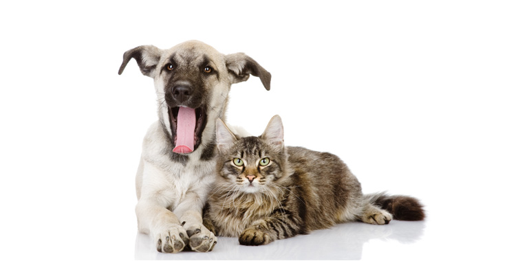

Nomenclaturas
| SRD | Sem Raça Definida |
|---|---|
| RND | Raça Não Defina |
| CRAND | Cão de Raça Não Definida |
| GRAND | Gato de Raça Não Definida |
| Nomes populares | |
| Vira-lata | Pé-duro |
| SRD | Sem Raça Definida |
|---|---|
| RND | Raça Não Defina |
| CRAND | Cão de Raça Não Definida |
| GRAND | Gato de Raça Não Definida |
| Nomes populares | |
| Vira-lata | Pé-duro |
Publicado em 30 de abril de 2025
Adotar um animal é um ato de amor que pode transformar a vida de um animal — e a sua também. Cães são companheiros fiéis, afetuosos e trazem alegria para qualquer lar. Além disso, ao adotar você contribui para reduzir o número de animais abandonados nas ruas e nos abrigos.